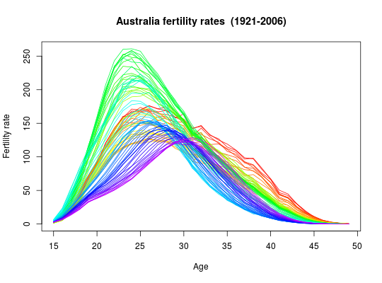

Age-specific fertility rates and female child-bearing population for Australia.
Object of class demogdata containing the following
components:
Vector of years
Vector of ages
List containing one matrix with one age group per row and one column per year.
Population data in same form as rate.
Type of object. In this case, “fertility”.
Character string giving area from which data are taken. In this case, “Australia”.
Australian fertility rates and populations (1921-2006) for single year age
groups (15-49) as provided by the Australian Bureau of Statistics. The
population numbers for 2002 onwards differ slighly from those in the
australia (mortality) object. The population numbers in
aus.fertility have been updated to the latest ABS estimates.
aus.fert in the
demography package contains similar data in 5-year
age groups.
plot(aus.fertility)